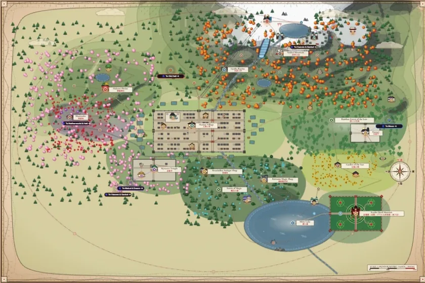

01 // 2D MAP & THREE.JS 3D ATLAS
Gensokyo 1:1 Interactive Atlas
Explore Touhou's Gensokyo across a 2D cartographic scroll or a Three.js 3D terrain view, with location guides, character profiles, and a point-to-point travel calculator.

- 2D Scroll & Three.js 3D
- 114+ Regions & 143 Cast
- Route & Travel Calculator